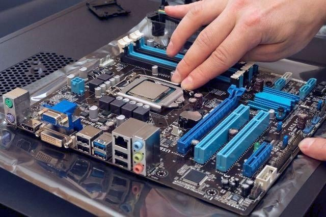
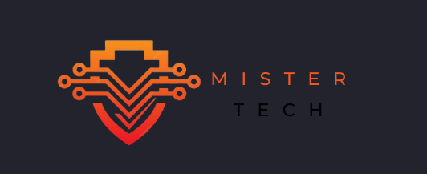
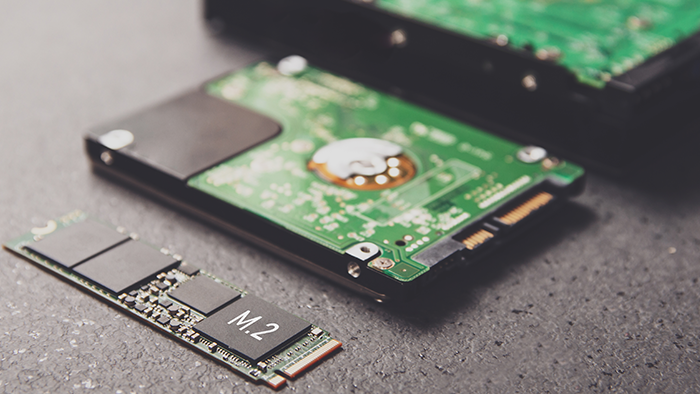

×

Consultoria de informática
Prestamos consultoria de informática, nosso papel é ser seu parceiro junto com a tecnologia, oferecendo
suporte e orientação personalizados para atender às suas necessidades específicas.
Estamos aqui
para ouvir suas preocupações, compreender seus objetivos e trabalhar em conjunto para encontrar
soluções que melhorem sua experiência com a tecnologia.
Desde a resolução de problemas técnicos até
o desenvolvimento de estratégias de longo prazo, buscamos as melhores alternativas eficaz e centrada em suas
necessidades.
Seja para atualizações
de sistemas, melhorias de segurança
ou simplesmente para fornecer orientação especializada, estamosou aqui para apoiá-lo em cada etapa do caminho.
Montagem
Prestamos serviços na montagem de computadores, buscamos montar conforme as necessidades, Cada componente
selecionado é cuidadosamente escolhido para garantir desempenho e confiabilidade, enquanto cada conexão é
feita com precisão para garantir uma experiência sem falhas.
Como consultor buscamos pelas melhores opções de hardwares no mercado,
estamos aqui para montar a melhor máquina, oferecendo expertise profissional e um toque humano
para garantir que sua máquina seja não apenas funcional, mas também uma expressão autêntica de quem você é.

Instalação e Manutenção CFTV
Preocupado com a segurança do seu espaço? Nós temos a solução.
Com nossa Instalação e Manutenção CFTV, você terá a tranquilidade de saber
que está protegido 24 horas por dia, 7 dias por semana.
Por que escolher-nos?
Profissionais experientes e dedicados.
Tecnologia avançada para monitoramento eficaz.
Soluções personalizadas para suas necessidades específicas.
Suporte contínuo para manter seu sistema sempre funcionando.
Quem somos
Somos mais do que uma equipe de especialistas em tecnologia -
somos pessoas apaixonadas pela arte de criar conexões significativas por meio da tecnologia.
Em cada linha de código que escrevemos,
em cada solução que desenvolvemos, buscamos trazer uma abordagem humana para o mundo
digital em constante evolução.
Nosso Compromisso com a Excelência
Buscamos excelência não apenas na qualidade do nosso trabalho, mas também na experiência
que proporcionamos aos nossos clientes.
Cada interação, desde a primeira conversa até o suporte
pós-implementação, é marcada por nossa dedicação em superar expectativas e criar valor real.


Recuperação de arquivos
Na execução dos serviços de recuperação de arquivos de HD, adotamos uma abordagem profissional, respeitando a lei LGPD.
Reconhecemos plenamente a importância dos dados armazenados em um disco rígido, que muitas vezes representam
memórias valiosas, informações cruciais para negócios ou projetos essenciais.
Nosso compromisso é oferecer um serviço técnico de alta qualidade, utilizando as mais avançadas ferramentas e métodos
de recuperação de dados para restaurar os arquivos perdidos ou danificados de nossos clientes.